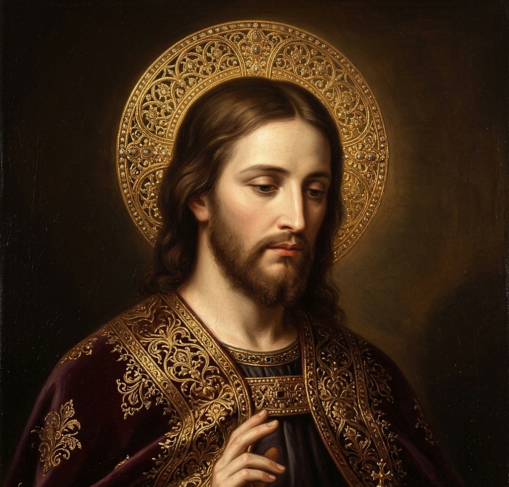

«Totus Tuus ego sum, et omnia mea tua sunt, o Virgo super omnia benedicta.»
Rezar también la Letanía del Espíritu Santo (Etapa I) o la Letanía Lauretana y el Santo Rosario.
✠ ¡HA LLEGADO EL DÍA SOLEMNE DE TU CONSAGRACIÓN TOTAL! ✠
Tras comulgar, recita y firma tu Acta de Consagración con tu rúbrica digital e imprímela en formato A4.
«Tota pulchra es, Maria, et macula originalis non est in te.»
36 Advocaciones Tradicionales de María Santísima ordenadas cronológicamente (40 d.C. – 1942)
Acceso se abrirá al completar la Consagración. Esta entrada se desbloqueará permanentemente cuando concluyas tu Consagración; te sugerimos conocer primero sobre la Santísima Virgen.
«Christus vincit, Christus regnat, Christus imperat! Regnum veritatis et vitae; regnum sanctitatis et gratiae; regnum iustitiae, amoris et pacis.»

«In principio erat Verbum, et Verbum erat apud Deum, et Deus erat Verbum... Et Verbum caro factum est.»
«Ego sum Via, et Veritas, et Vita. Nemo venit ad Patrem, nisi per Me.» (Jn 14, 6)
Añade el icono de la Medalla Milagrosa a la pantalla de inicio de tu teléfono, tablet o computadora para abrirla a pantalla completa y sin conexión:
• En iPhone / iPad (Safari): Toca el botón Compartir (↑) en la barra de Safari y selecciona «Agregar a inicio».
• En Android (Chrome): Pulsa el botón superior o el menú ⋮ y selecciona «Instalar aplicación».
«Esta entrada se desbloqueará permanentemente cuando concluyas tu Consagración. Te sugerimos conocer sobre la Santísima Virgen; si quieres entrar ahora, el botón para desbloquear está abajo.»
Aviso de privacidad: El archivo de respaldo incluye tu nombre y firma si los escribiste; consérvalo en un lugar privado.
¿Confirmas eliminar tu nombre, ciudad y firma guardados en este navegador?
Trabajo en aplicaciones católicas, rescate de libros y formación tradicional. Si deseas sumarte como bienhechor o conocer nuestra obra visita:
👉 https://buymeacoffee.com/crvxvincete
Acceso se abrirá al completar la Consagración.